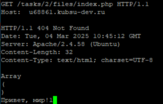
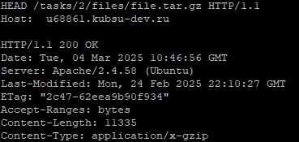
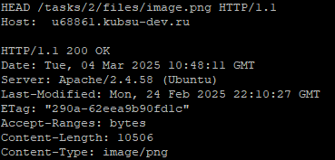
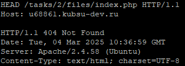

Задание 2
Перед началом выполнения задания загрузил через Git необходимые файлы на сервер, используя уже знакомую команду git pull, и проверил работоспособность файла index.php с помощью команды php index.php:
1. Для обращения к серверу использовал утилиту Telnet и команду telnet 192.168.199.8 80. Далее получил главную страницу методом GET в протоколе HTTP 1.0, введя соответствующий запрос:
2. Для запросов в протоколе HTTP 1.1 уже необходимо указывать заголовок Host со значением адреса сервера, в нашем случае это u68861.kubsu-dev.ru. Получим внутреннюю страницу сайта:
3. Всю информацию о файле можно получить с помощью метода HEAD. Информацию о размере файла (в байтах) содержит заголовок Content-Length. Узнаем размер файла file.tar.gz:
4. Определить медиатип файла поможет заголовок Content-Type. Узнаем медиатип файла image.png:

5. Для передачи некоторой информации на сервер используется метод POST. Например, чтоб отправить комментарий на сервер, необходимо прописать два заголовка: Content-Type: application/x-www-form-urlencoded и Content-Length: 28 (где 28 — это длина передаваемой строки) — и написать комментарий, пропустив одну строку:
6. Получить диапазон байтов [a;b] можно, используя заголовок Range: bytes=a-b. Выведем первые 100 байт файла file.tar.gz:
7. Для текстовых файлов заголовок Content-Type содержит еще и кодировку файла. Узнаем ее для файла index.php:
